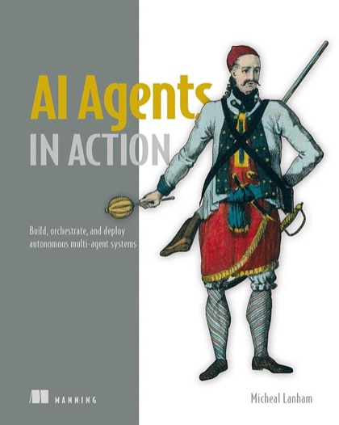

Writing / Book review
AI Agents in Action: A Practical Tour of Building Autonomous Systems
Micheal Lanham's hands-on guide covers agent architectures, tool use, memory, planning, multi-agent setups, and evaluation. Here is what it gets right and where production engineers need more.

- Book
- AI Agents in Action
- Author
- Micheal Lanham
- Publisher
- Manning Publications, 2025
- ISBN
- 9781633436343
- My rating
- ★★★★☆ 4/5
VerdictA broad, practical on-ramp to building LLM agents with lots of runnable examples. Pair it with a security-minded resource before you let an agent touch production.
Agent books are hard to write. The field changes every quarter, and frameworks rise and fall faster than a book goes to print. AI Agents in Action handles this sensibly. It teaches the durable building blocks of agents (actions, memory, knowledge, planning, feedback) and uses frameworks such as AutoGen and CrewAI as vehicles rather than as the lesson. It also introduces Nexus, the author's own open-source agent platform, and borrows behavior trees from game AI as a way to give agents explicit, inspectable control flow.
The agent anatomy the book teaches
The loop at the heart of it
What it does well
Breadth, with code
It covers single agents, multi-agent conversations, agent platforms, and assistants with memory and knowledge, all with runnable examples. For someone who has only used a chat interface, it is an efficient tour of what is possible.
Multi-agent patterns
Behavior trees: control flow you can read
This is one of the book's most practical ideas. A free-form LLM loop decides its own control flow, which makes it hard to test. A behavior tree makes the control flow explicit and leaves the LLM to handle each node, which is much easier to debug and evaluate.
Planning and feedback
The chapters on planning and feedback push beyond "call tools in a loop" toward agents that check their own work, which is the difference between a demo and a system.
What production engineers need on top
The book is an on-ramp, not a production manual. Before shipping, you need deeper treatment of:
I cover the security side in How to Put Guardrails on an AI Agent, and grounded outcome evaluation is central to my voice-agent research.
My rubric
| Topic | Coverage |
|---|---|
| Building blocks and tools | Strong |
| Multi-agent patterns (AutoGen, CrewAI) | Strong |
| Memory and knowledge | Good |
| Evaluation rigor | Moderate |
| Security and guardrails | Light: supplement it |
Verdict
Four stars. A practical, generous introduction to building agents. Read it to get started, then harden what you build with security and evaluation discipline before it touches real users.

Shivam Negi is an AI engineer and Principal Data Scientist who works on evaluating voice agents, small language models, and applied ML. More about me